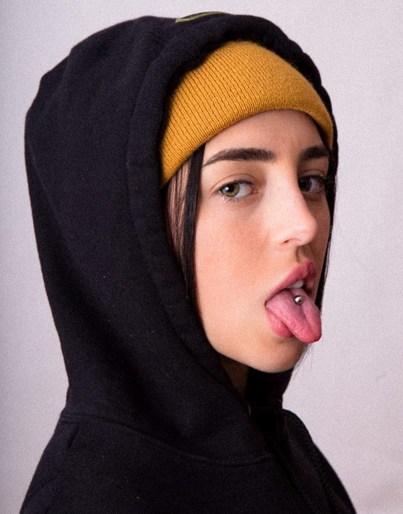

Nicki Nicole

Nicki Nicole, nacida Nicole Denise Cucco el 25 de agosto de 2000 en Rosario, Argentina, es una destacada artista del género urbano que ha revolucionado la música latina con su estilo único. Desde sus inicios en 2017, Nicki se ha convertido en una figura prominente en la escena del trap y el reguetón, combinando elementos del hip-hop con influencias locales.
Su carrera despegó con el éxito de su sencillo "Wapo Trak" en 2019, el cual capturó la atención de críticos y fans por igual. Su álbum debut, "Recuperación", consolidó su posición en la industria musical, mostrando su capacidad para fusionar ritmos modernos con letras introspectivas.
Nicki Nicole ha colaborado con importantes artistas como Bizarrap, Rels B y Cazzu, ampliando su alcance global y estableciéndose como una voz influyente en la música latina. Además de su éxito en la música, ha sido reconocida por su estilo innovador y su capacidad para conectar con audiencias de diversas culturas.
Hoy en día, Nicki Nicole continúa desafiando los límites del género y manteniéndose a la vanguardia de la música urbana, consolidando su lugar como una de las artistas más prometedoras de su generación.